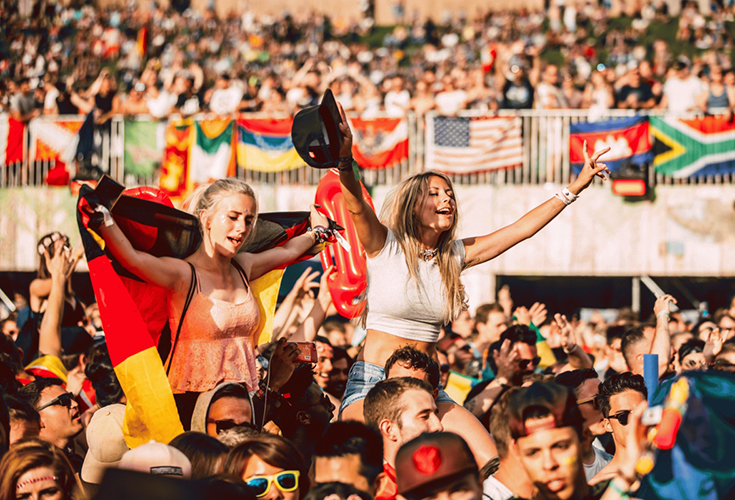
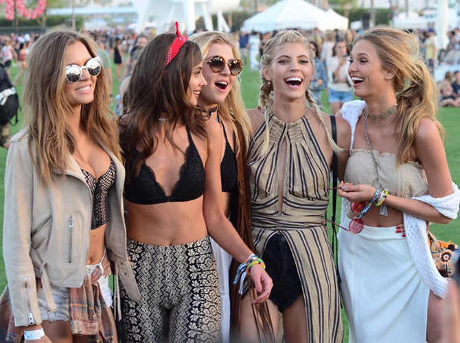
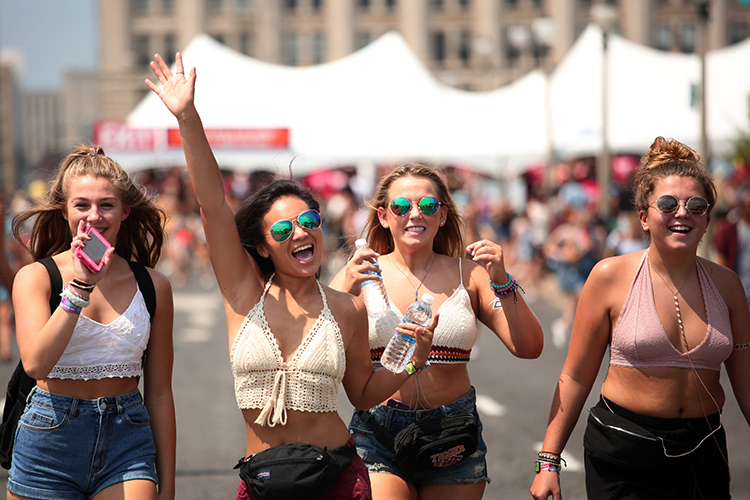
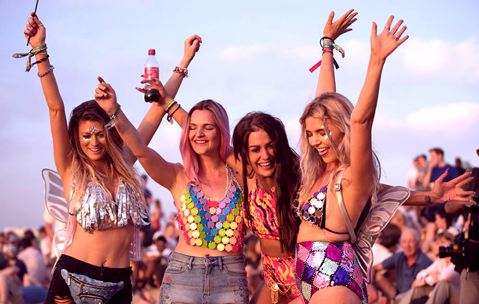

Най-популярните световни фестивали в момената
Tomorowland

Tomorrowland е фестивал за електронна танцова музика, провеждан в Бум, Белгия.
Tomorrowland се проведе за първи път през 2005 г. и оттогава се превърна в един от най-големите и забележителни музикални фестивали в света.
Хората на Tomorrowland вярват, че се наслаждават на живота пълноценно, без да се налага да компрометират всичко.
Сега тя се простира в продължение на 2 уикенда и обикновено се разпродава за минути с приблизително посещение от над 400 000 души.
Tomorrowland oficial site
Coachella

Музикалният и художествен фестивал Coachella Valley е ежегоден музикален фестивал, провеждан през два уикенда в Индио, точно на изток от Палм Спрингс.
Coachella представя популярни и утвърдени музикални артисти, както и нововъзникващи артисти и обединени групи.
Това е един от най-големите, най-известните и най-печеливши музикални фестивали в САЩ и света.
Всяка Coachella, организирана от 2013 до 2015 г., постави нови рекорди за посещаемост на фестивала и брутни приходи.
Фестивалът през 2017 г. беше посетен от 250 000 души.
Coachella oficial site
Lollapalooza

Lollapalooza Нещо започна през ’91. И просто не можем да спрем. С 8 етапа и 170+ ленти от цял свят, всеки състав на Lolla кара ръцете да махат, главите да кимат и тълпите да викат.
Lolla разполага със сладки фотогенични петна, интерактивни зони с подаръци и тонове стоки, с които да се замените. Има дори мини-фест за децата.
Chow Town предлага най-вкусната фестивална храна, напитки и сладкиши от любимите ресторанти на Windy City.
Ние предлагаме на нашите клиенти много повече от типичната тарифа от типа „карнавал“, с акцент върху пресни, разумни цени от района на Чикаго.
Едно от най-хубавите неща за събирането на хиляди ентусиазирани, съмишленици заедно?
Свързваме ви с организации, които подобряват и спасяват животи.
Lollapalooza oficial site
Glastonbury

Първият фестивал се проведе в деня след смъртта на Джими Хендрикс, в рамките на двудневен период и не след дълго „думата се разнесе“.
Блус фестивалът в изложбената зала Bath & West е вдъхновил Майкъл Ийвис да започне собствен фестивал, макар и в по-малък мащаб.
Glastonbury oficial site